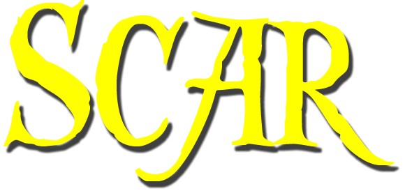
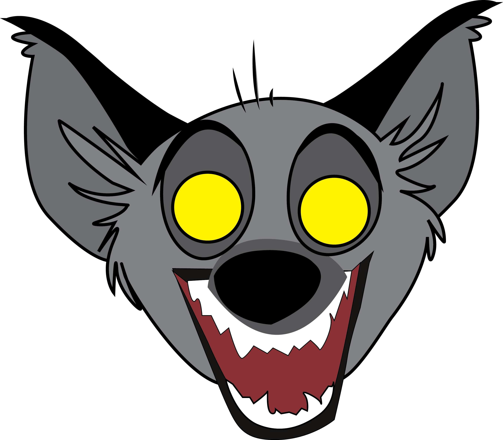
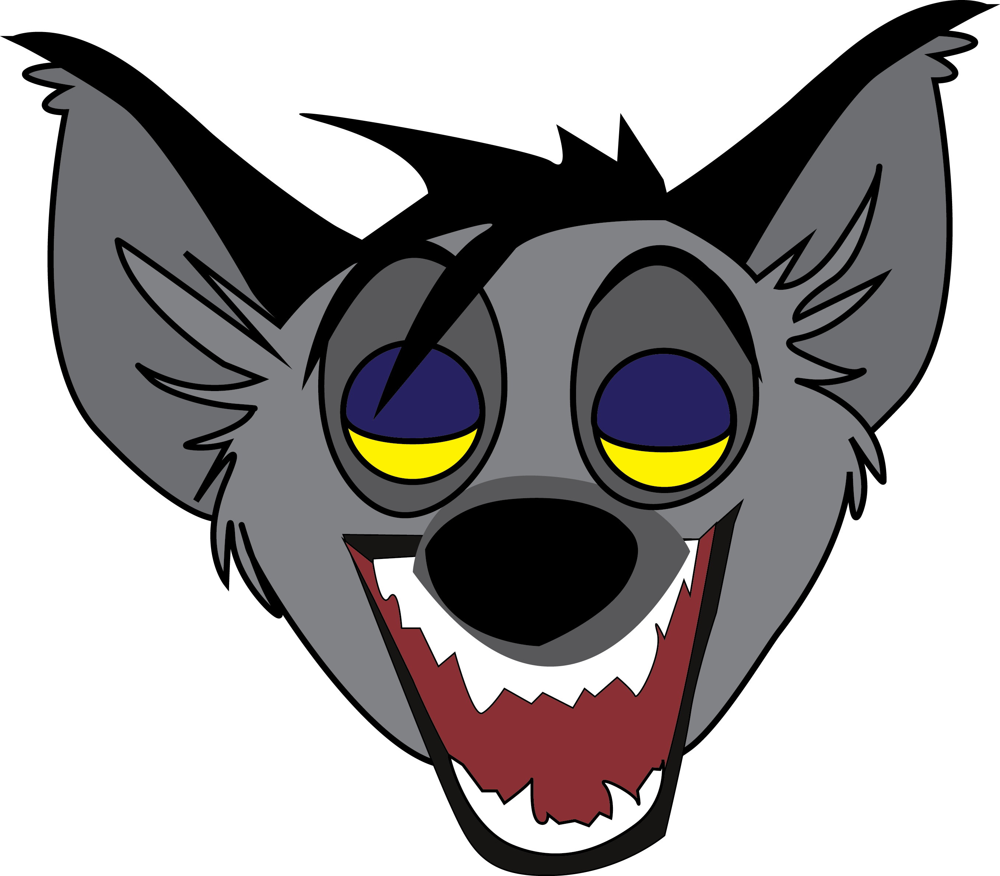
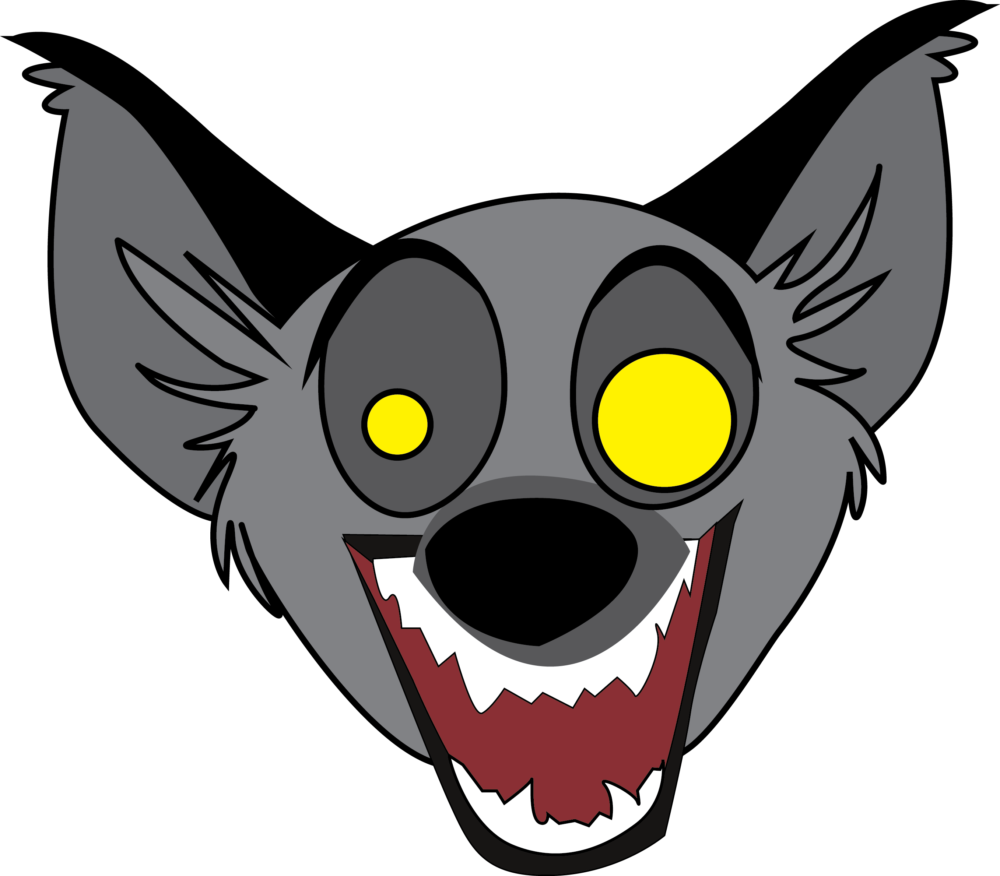

Long Live the King
- Scar's Bio
- Scar is the main antagonist of Disney's 1994 animated film, The Lion King. He is the younger brother of Mufasa and uncle of Simba. He coveted his brother's position as King of the Pridelands. With his hyena henchmen, he killed Mufasa and attempted to kill Simba.
- Scar's Hyenas
- Scar controls a group of hyenas to overthrow the Pridelands. The main 3 are Bonzai, Shenzi, and Ed.   
- Listen to one of his lines
- Scar's Song
- Facts
-
- Jeremy Irons was his main voice actor. However, during the recording of "Be Prepared" his voice gave out after performing the "You won't get a sniff without me!" line. Jim Cummings perforemed
- Scar's birth name Taka is the Swahili word for "want".
- He is a primary member of the Disney Villains franchise.